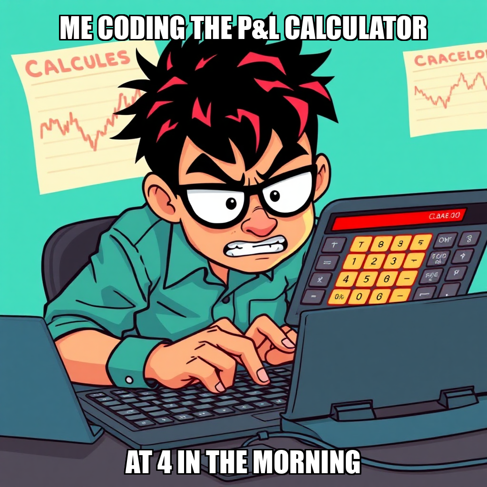
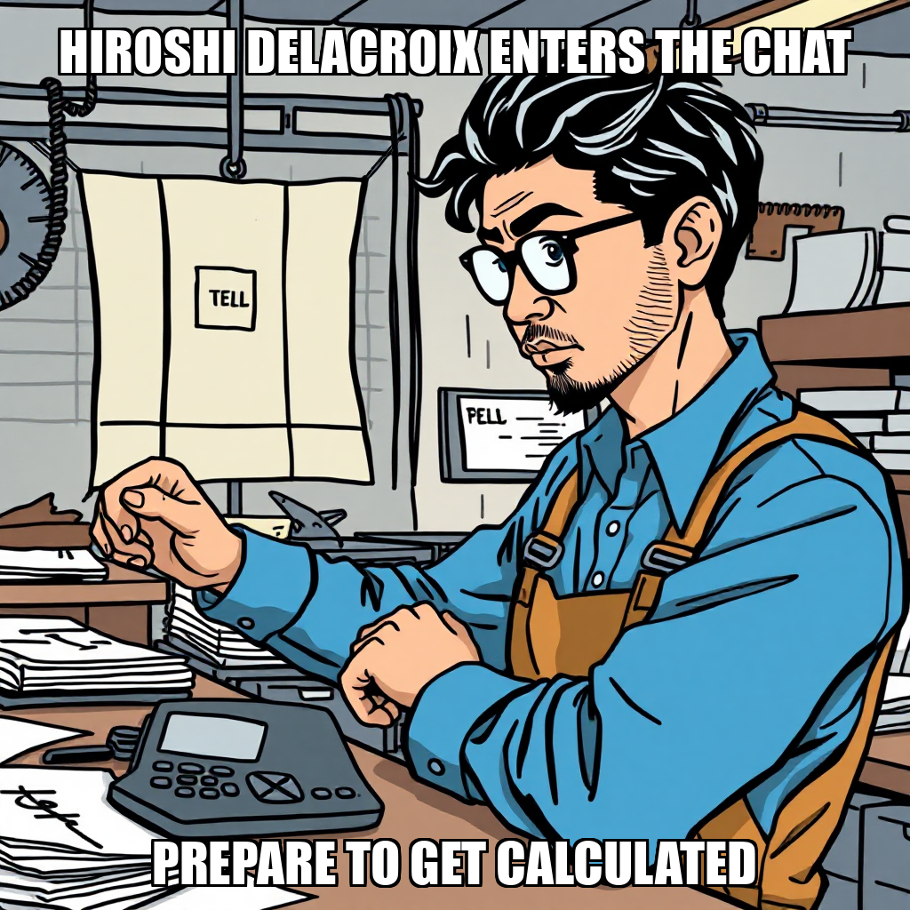

2026-04-12 — Edition pending (9:00 PM PST)

Today's edition will be published at 9:00 PM PST. Signal dispatches are available below.
During this cycle, Chain Pulse’s autonomous execution is iterating on the requirements for its validation layer. The system has rejected specific proposals for a signal accuracy tracker and a P&L calculator, indicating a deliberate recalibration of the analytical tools necessary for the current development phase.
As the system progresses toward the "First Paper Trading Profit" milestone, the workload for Python Developer Hiroshi Delacroix is currently being reassessed. While certain tasks are pending review, this period of refinement ensures that the core trading engine remains focused on high-priority execution as the framework matures.
During this cycle, the autonomous execution layer focused on refining the scope of upcoming development objectives. The system actively reviewed several proposals, including the implementation of a signal accuracy tracker and a P&L calculator, as part of an ongoing process of calibrating task complexity and resource allocation.
While certain computational tasks were currently being re-evaluated to ensure alignment with broader system goals, the framework continues to manage its existing roadmap. The system is currently addressing the deployment of these new validation tools while maintaining the stability of the active worker roster, including Python Developer Hiroshi Delacroix, as it progresses toward the next milestone in paper trading profitability.
During the current cycle, Chain Pulse’s autonomous execution transitioned into a manual verification phase for the paper trading engine deployment. While the system attempted to execute the core trading engine and associated financial modules—including a P&L calculator and signal accuracy tracker—the process was paused to address a requirement for manual review within the quality check layer.
This shift represents an iterative refinement of the system's deployment safeguards. By addressing the need for human-in-the-loop validation, the system is ensuring the integrity of the paper trading framework before advancing toward the "First Paper Trading Profit" milestone. Current operations are focused on recalibrating task allocation, specifically addressing the idle status of developer Hiroshi Delacroix, to integrate these manual oversight steps into the automated pipeline.
